I have two years of professional experience in city planning and GIS analysis, working on active transportation planning, land use, community planning projects, and more. I'm skilled in translating complex spatial datasets, technical findings, and public engagement into clear, actionable planning documents for agencies, stakeholders, and the public.
-
Bachelor of Science in Urban EcologyCollege of Architecture and Planning, University of Utah, 2023
-
Master's Certification in GISUniversity of Utah, 2025
-
Bicycle Urbanism StudiesDIS Study Abroad, University of Copenhagen, Summer 2023
Planning Work
Since 2023, Bike Utah has operated a nonprofit planning consultancy, working directly with local governments. I have worked on 5 contracts spanning active transportation plans, trail and wayfinding studies, zoning and design standards all aimed at improving the walkability, bikeability, and livability of Utah communities.
On each of these plans I worked as part of a larger project team, contributing substantially to analysis, mapping, engagement, and plan development.
↻ Click or tap a card for details and the full plan
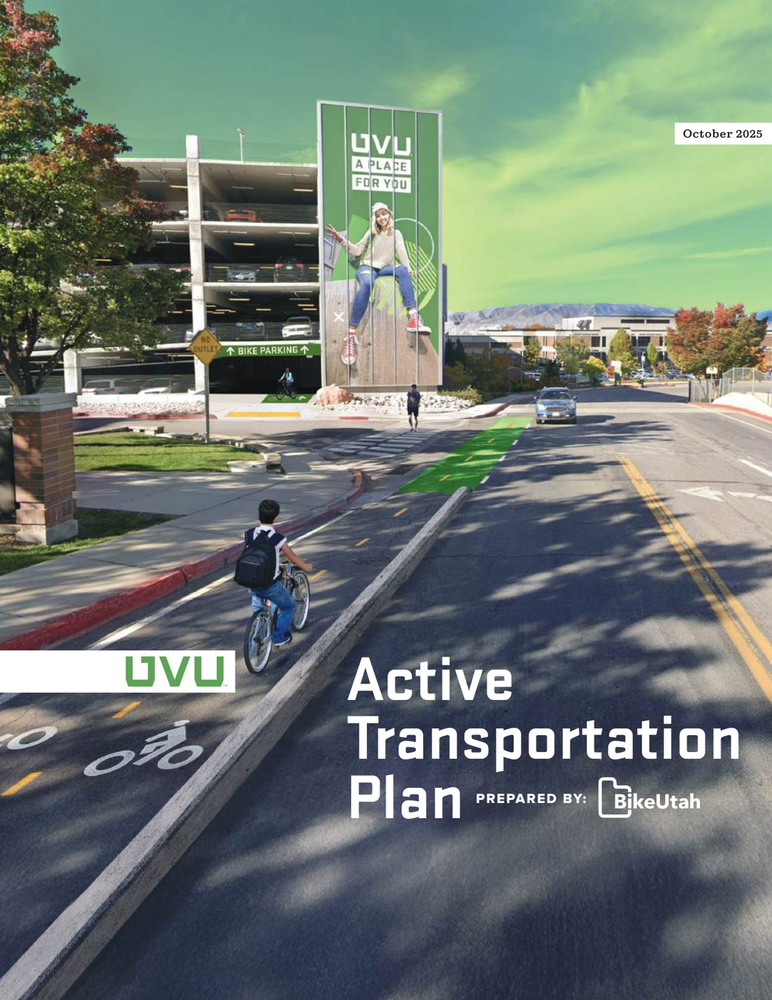
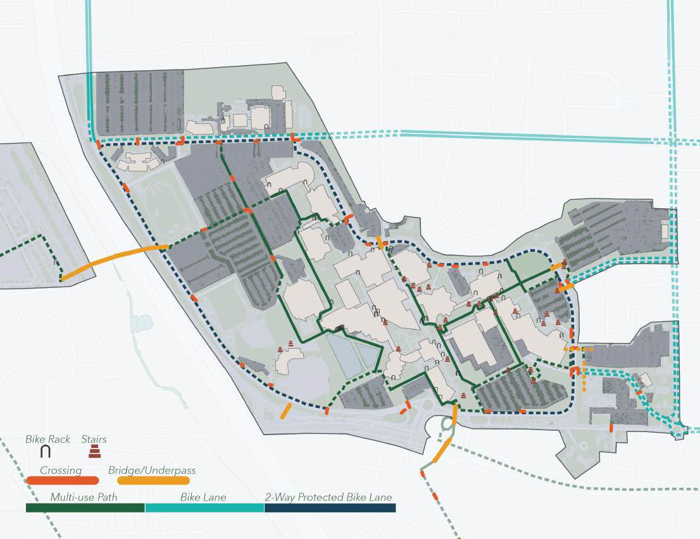
- Campus-wide Active Transportation Plan linking UVU, surrounding neighborhoods, and regional transit
- Evaluates walking and biking conditions on campus and across the network
- Identifies major barriers to active commuting
- Infrastructure and program strategies for students, faculty, staff, and visitors
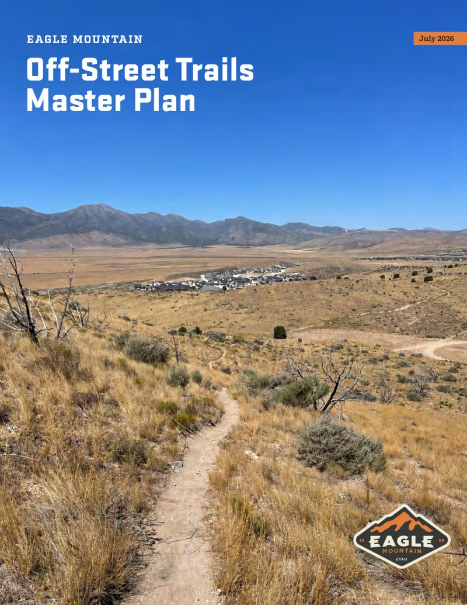
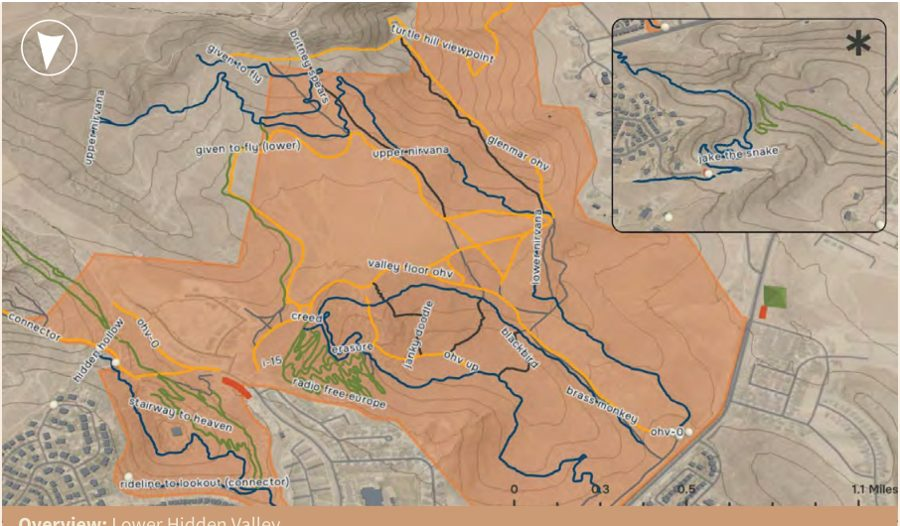
- Off-street trails master plan focused on Hidden Hollow and surrounding public lands
- Field-based assessment of the existing trail system
- Identifies safety, drainage, erosion, connectivity, and signage issues
- Recommendations to improve conditions and expand access for all trail users
- Evaluated the city's bike park; proposed skill-area and expansion upgrades
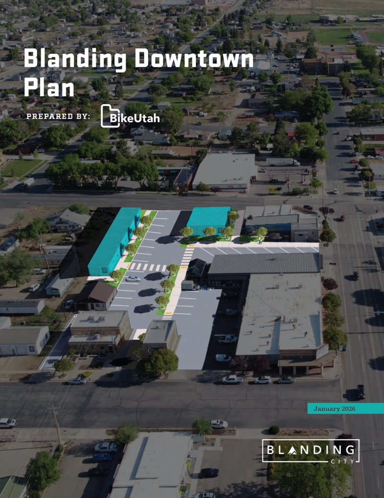
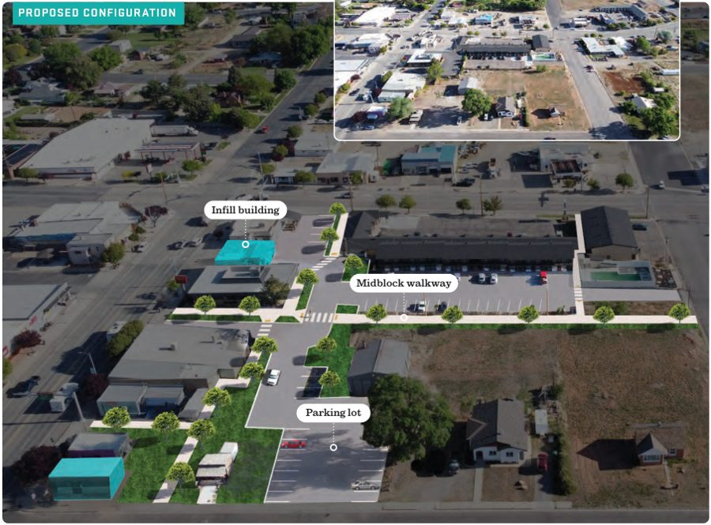
- Recommendations to make downtown more walkable and vibrant
- Street redesigns, downtown zoning code, wayfinding and street amenities
- Branding and marketing recommendations
- Existing conditions analysis
- Community workshop for engagement
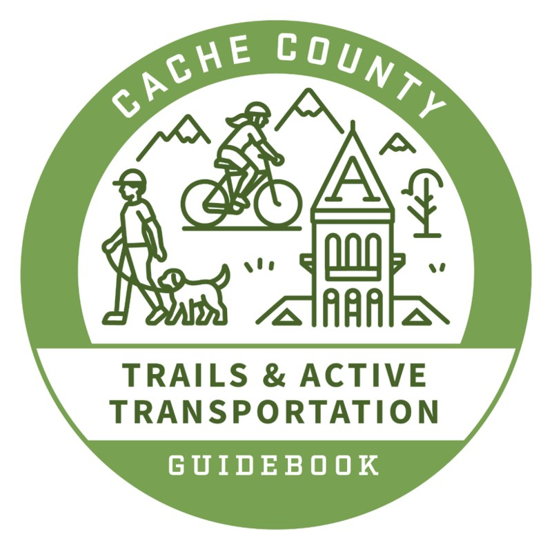
- Guidebook for municipalities to support implementation of AT facilities
- More consistent design standards for municipalities to follow
- Context-sensitive standards aligned with Cache County's unique characteristics
- Model ordinances and policy tools
- Hosted 3 community workshops
GIS Work
I create spatial analysis, maps, and interactive dashboards for Bike Utah planning contracts and the City of West Jordan, turning complex datasets into tools that planners, staff, and the public can use.
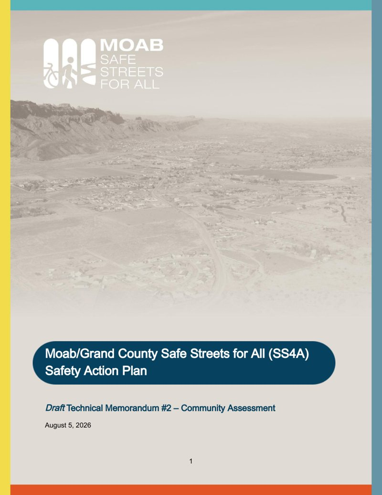
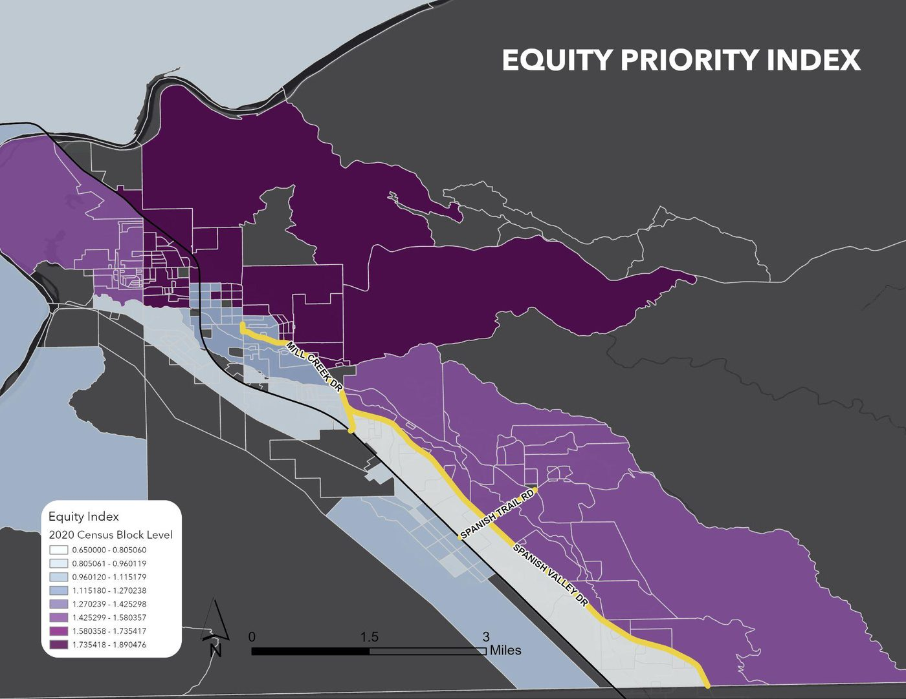
- Community assessment for the Moab/Grand County SS4A Safety Action Plan
- Built an Equity Priority Index (WFRC method) from 2020 Census blocks and 2024 ACS data
- Level of Traffic Stress and gap analysis of bike lanes, sidewalks, and crossings
- Travel shed analysis showing how planned corridor improvements expand walking and biking access to neighborhood and regional centers
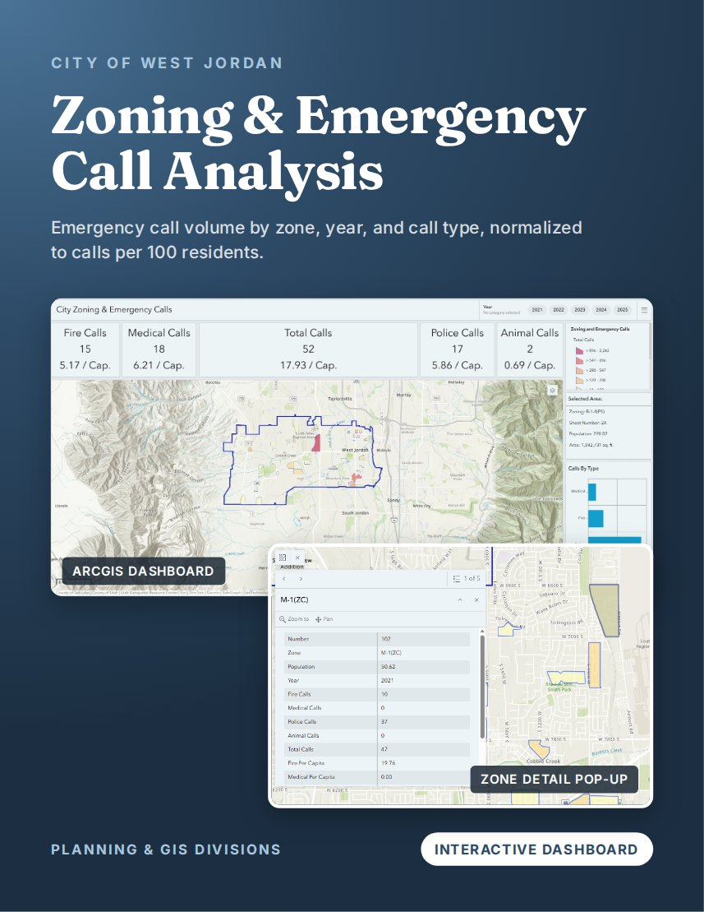
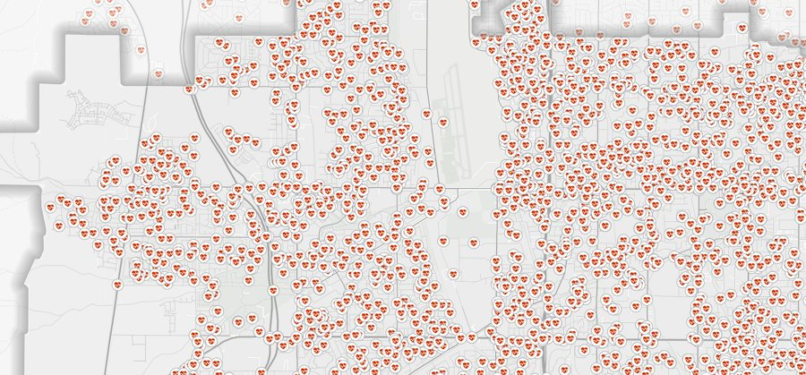
- Compared emergency call volume across zoning areas for the Planning Division
- Built custom study-area polygons and clipped call data to each zone
- Estimated zone populations from census block data
- Calls per 100 residents, by year and call type
- Interactive ArcGIS Dashboard built for non-GIS staff
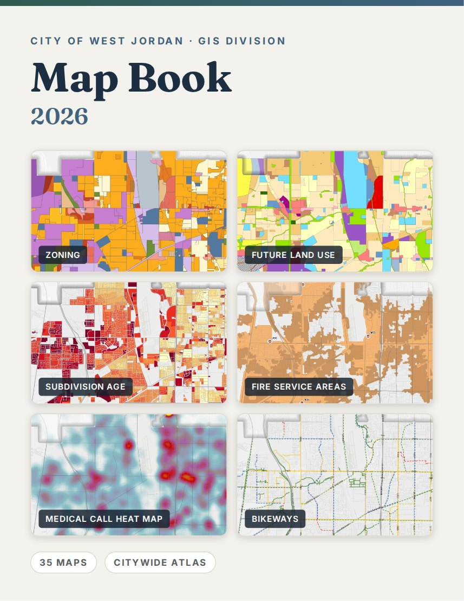
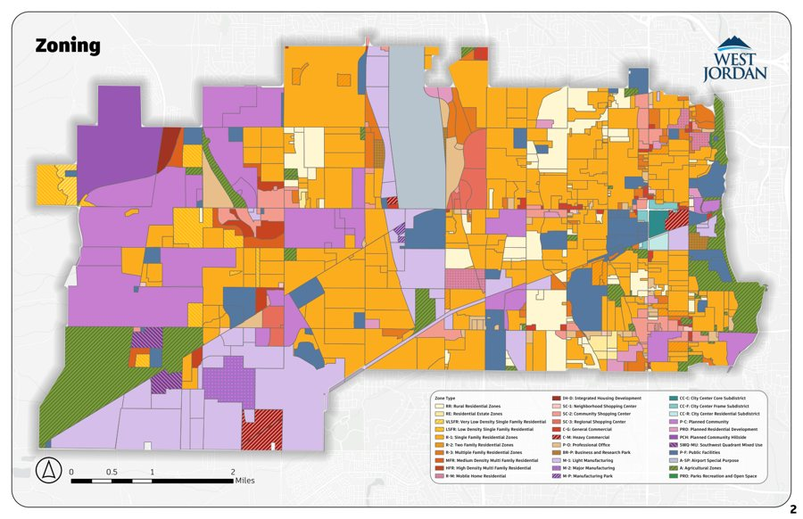
- 2026 citywide reference atlas of 35 maps for city staff
- Organized by land use, utilities, schools, emergency services, transportation, public works, and districts
- Includes zoning, future land use, FEMA flood zones, and liquefaction potential
- 2025 medical and fire call maps and heat maps, plus fire station service areas
- Consistent cartographic template across every map